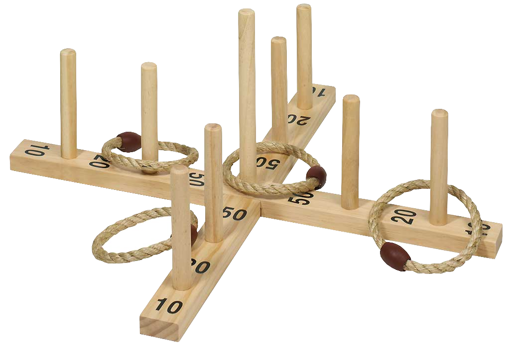

Lancer d'anneaux

Origines :
Il existe plusieurs variantes du lancer d'anneaux, possédant chacune des origines différentes. Le quoits, la version la plus basique, est reconnu comme étant d'origine anglaise.
Règles :
Le jeu de lancer d'anneaux classique est simple : chaque joueur lance tour à tour un anneau sur des poteaux numérotés. Un joueur arrivant à faire passer le poteau dans l'anneau marque les points du batonnet. Après un certain nombre de manches, on compte le total des points marqués afin de désigner le vainqueur.
Il existe de nombreuses variantes, parmi elles :
- Les muckers, ou "fers à cheval circulaires", dans lequel la manière dont l'anneau atterri sur le poteau influence le nombre de points marqués. Il n'y a que deux poteaux aux muckers.
- Le jeu des fers à cheval, où il n'y a qu'un seul poteau et les anneaux sont remplacés par des fers à cheval. Les points sont alors accordé en fonction de la distance entre le fer et le poteau. Le jeu des fers à cheval possède lui-même de nombreuses variantes. Il est principalement pratiqué aux Etats-Unis.